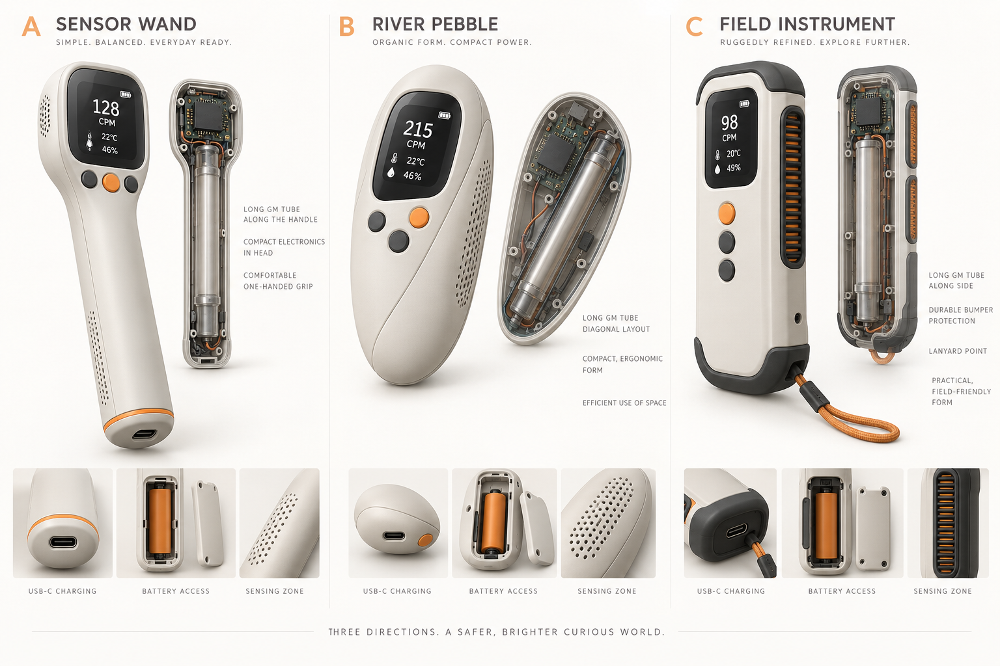

Visible by design
A smoked polycarbonate back reveals the tube and ordered electronics while an opaque internal guard keeps high voltage inaccessible.
POCKET SCIENCE / OPEN SDK
A river-pebble radiation counter that makes the invisible environment tangible—then gives you the tools to build on it.

DESIGNED TO TRAVEL
A smoked polycarbonate back reveals the tube and ordered electronics while an opaque internal guard keeps high voltage inaccessible.
CPM/CPS is the primary output. Temperature and humidity add context to experiments and logged observations.
A structural chassis loop takes a mini carabiner while compliant tube supports protect the detector from everyday knocks.
OPEN SDK
IonTrail One is planned as a product customers can understand and extend. The public Arduino/PlatformIO SDK provides a stable pulse-counting core and straightforward access to measurement data.
#include <IonTrail.h>
IonTrailDevice detector;
void loop() {
detector.update();
if (detector.hasFreshReading()) {
Serial.printf("%.1f CPM\n", detector.cpm());
}
}PLANNED ARCHITECTURE
Development modules make EVT fast. A consumer revision should consolidate the design onto a custom PCB with traceable components, protected charging, controlled high voltage, test points, and a mechanically inaccessible HV shield.
AN HONEST INSTRUMENT
IonTrail One is an educational and environmental-monitoring project. It is not a certified dosimeter, medical device, contamination survey meter, or proof that an environment is safe. Dose estimates require tube-specific, instrument-level calibration and visible uncertainty.
Safety, calibration and product claims →BUILD WITH IONTRAIL
The repository is the future customer SDK, hardware reference and development log.
View the project on GitHub ↗